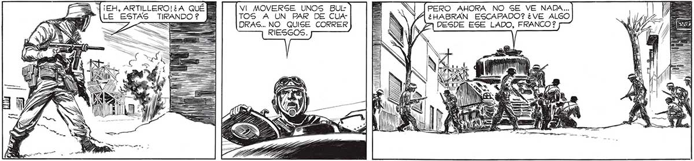
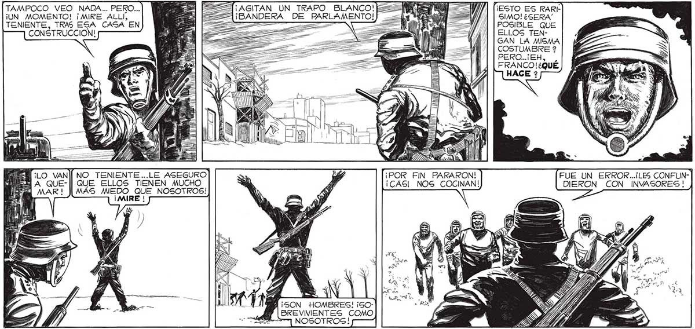

PERO AHORA NO SE VE NADA... ¿HABRAN ESCAPADO? ¿VE ALGO (e 102 FAL TiEH, ARTILLERO! ¿A QUÉ VI MOVERSE UNOS BULA” (LE ESTAS TIRANDO? KB TOS A UN PAR DE CUAAA = DRAS... NO_QUISE CORRER DESDE ESE LADO, FRANCO ? RIESGOS. pl . VA TAMPOCO VEO NADA... PERO... NE FO 1 fiesto ES RARE ¡UN MOMENTO! ¡MIRE ALLÍ, E EA ¡BANDERA DE PARLAMENTO! ds SIMO! ¿SERA TENIENTE, TRAS ESA CASA EN ME >= CM Y) / | [rosisLe que CONSTRUCCION! dl 22 A TE 4 | [ELLOS TENpb A 2 ] | | GAN_LA MISMA COSTUMBRE ? PERO..¡EH, FRANCO!¿QUÉ u Wu y e Mio SS A We > AOS y ñ ¡MANO o, SS á h ¡a BAN EN nz z 5 e = ha ANTÓN i !) h ll | ) Ñ ll me Ñ A : NO TENIENTE ...LE ASEGURO S 24 ¡POR FIN PARARON! QUE ELLOS TIENEN MUCHO EN Ps ¡CAS! NOS COCINAN! MAS a NOSOTROS! y | Le A ¡SON HOMBRES! ¡5OBREVIVIENTES COMO ==] NOSOTROS!

